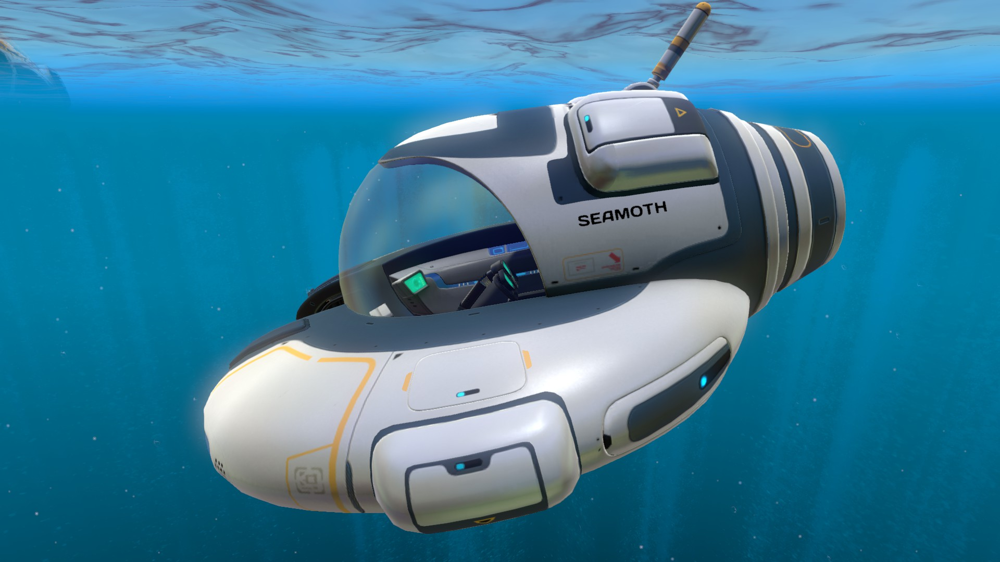
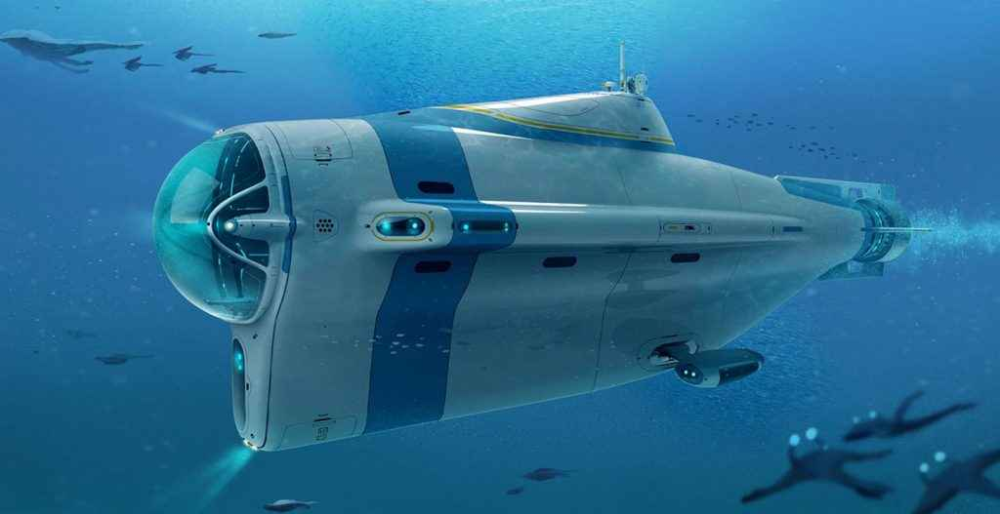

Fabricator
The fabricator is the crafting table table of subnautica, it makes nearly everything you need in the game. With the fabricator, you can make: resources, sustenance, personal items, and deployables. Some of the most essential items needed to craft with the fabricator are water, food, tools, and a vehicle bay. Some of the most common resources used to craft items are titanium, copper, silver, gold, and more.
Fabricator:
(click to see more about the fabricator)

Vehicles
Without vehicles, unless you are very skilled at the game, you wouldn't get very far. vehicles not only help you transport to areas quicker, but they also give you infinite oxygen, storage, torpedos, flashlights, moveable bases, the ability to mine resource deposits, and more. There are three main vehicles and a seaglide. The seaglide doesn't give you any of the listed abilities above, except quicker transportation and a flashlight. The seaglide is the usually the first obtainable vehicle and is used to move around when not inside another vehicle. The three main vehicles are the seamoth, a small car-like vehicle, the cyclops, a movable base with lots of storage, and the prawn suit, a robo-suit used to go extremely deep and mine resource deposits, usually obtained in that order. You can also upgrade your vehicles. The table below shows all of the depth modules.
Seamoth:
Cyclops:
(click on any to see more about vehicles)
 Prawn Suit:
Vehicle depth modules:
| Vehicle | Upgrade | Original Max Depth | Upgraded Max Depth |
|---|---|---|---|
| Seamoth | Mark 1 | 200m | 300m |
| Seamoth | Mark 2 | 200m | 500m |
| Seamoth | Mark 3 | 200m | 900m |
| Cyclops | Mark 1 | 500m | 900m |
| Cyclops | Mark 2 | 500m | 1300m |
| Cyclops | Mark 3 | 500m | 1700m |
| Prawn Suit | Mark 1 | 900m | 1300m |
| Prawn Suit | Mark 2 | 900m | 1700m |
Tools
Tools are also essential to beating subnautica. There are many different tools, but these four are the most used, the scanner used to collect bluepronts to make vehichles and base parts , the repair tool, used to repair lifepod, vehichles, and bases, the habitat builder, used to construct bases, and the lazer cutter, used to cut through sealed doors.
Scanner:
(click to see more about tools)